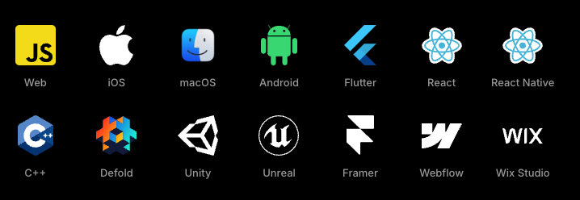

Spirituele opvolger
Adobe Flash 🪦
Figma & Duolingo
Rive Runtimes
Run Anywhere

Wat maakt Rive dan zo krachtig?
Animaties aanpassen tijdens runtime?
Je kunt Rive-animaties ook met code aansturen
Text Run
Dynamisch aanpassen van tekst tijdens runtime
Layouts
Scrolling
Gee Brain, what do you want to do tonight?